Scale
SCALE · Likert scale (select one of 1~N)
What is a Scale field?
- 1.1Adding a field and the property panel layout
1.1Adding a field and the property panel layout
Overview
Scale (SCALE) is a Likert scale input where users pick one of a set of predefined numbers. Use it for items answered with a grade, such as pain level · satisfaction · severity. Numbers are shown, but they are buttons, not a box for free input, and the stored value is the single integer the user picked. If nothing is picked, the value is empty. If you need to accept a numeric value typed directly, use the Number type; if you need options written as text, use a Single choice-family type.
Screen guide
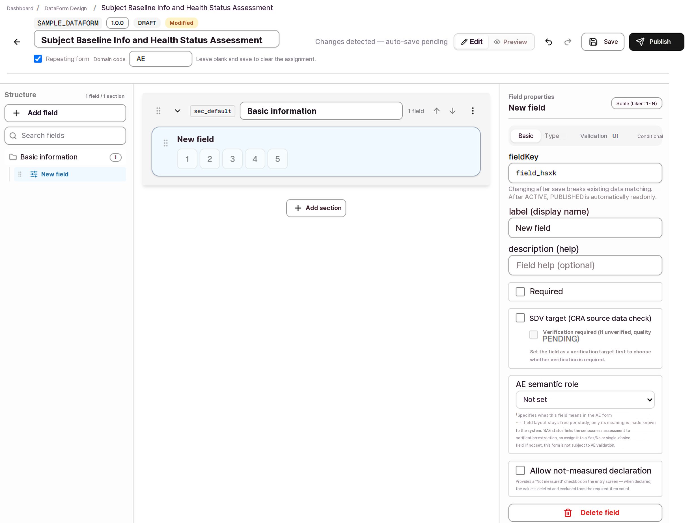
[+ Add field] — Specify the type here to create the field.
The new field is added to the structure tree.
Option buttons in a single row appear on the WYSIWYG canvas. Initially there are five, 1~5; change the count and range in Type settings. 3.2
fieldKey — The actual key under which the value is stored. 2.1
label (display name) · description (help) — The name and supporting description shown on screen. 2.1
Required · SDV target · AE semantic role · Allow not-measured declaration — Each is explained in Chapter 2.
Type badge “Scale (Likert 1~N)” — The type of the selected field. It cannot be changed after the field is added.
5 property tabs — Basic · Type settings · Validation · UI · Conditional. Of these, this manual does not cover the Validation tab — because values are picked from options, value validation does not apply. (6.1 ‘Not covered’)
Precautions
Must check Data corruption · Form cannot be completed
- • The type cannot be changed after the field is added. If you chose the wrong type, delete the field and add it again. (Only sub-items of table-type fields and field groups are an exception and allow a type change.)
- • The stored value is a number. End labels such as “Barely painful” are shown only on screen; the data contains only the integer picked (e.g.
3). Record the scale definition in the protocol as well, so that people reading the exported data know what the number means. - • The structure cannot be changed after publishing (PUBLISH). If changes are needed during operation, publish a new version.
Easily misunderstood behavior
- • When you change a setting, “Changes detected — auto-save pending” appears at the top. The change is saved automatically after a moment; you can also select [Save] to save immediately. To undo, press
Ctrl+Z.
Basic tab — name · required · verification target · not measured
- 2.1fieldKey · display name · help
- 2.2Required
- 2.3SDV target (CRA source data check)
- 2.4Allow not-measured declaration
2.1fieldKey · display name · help
Overview
This area sets the field's names. The storage key (fieldKey) and the name shown on screen (label) are different values, and the point up to which each may be changed differs.
Screen guide
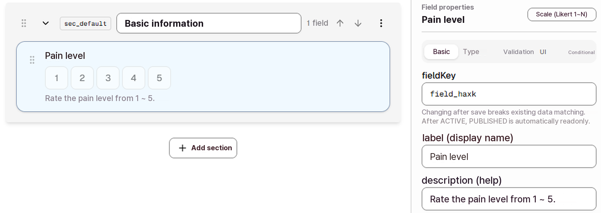
label (display name) — Enter the item name to show on the entry screen.
It is shown as the field title on the canvas.
description (help) — Enter a supporting description to show below the display name. If left blank, nothing is shown.
It is shown in gray text below the option buttons.
fieldKey — The actual key under which the value is stored. When you add a field it is assigned automatically, like field_haxk, and can be changed using letters, digits and underscores. It is not shown on screen — be sure to read the precautions below.
Precautions
Must check Data corruption · Form cannot be completed
- • ⛔ Do not change the fieldKey after saving. As the on-screen notice says, “Changing after save breaks existing data matching” — values already entered are no longer linked to the new key and are effectively lost.
- • Help is especially important for Scale. It is a type that shows only numbers, so unless text tells recorders which end is more severe, each recorder may read the direction the opposite way. Use help 2.1 and helpText 4.4 together.
- • Once the form becomes PUBLISHED after ACTIVE, the fieldKey input becomes read-only automatically. The system prevents changes only from that point on, so until then users must take care themselves.
Easily misunderstood behavior
- • The display name can be changed safely at any time, because it is on-screen text, not the storage key.
2.2Required
Overview
Sets whether this item must be selected. When selected, saving is blocked on the entry screen if no button has been picked.
Screen guide
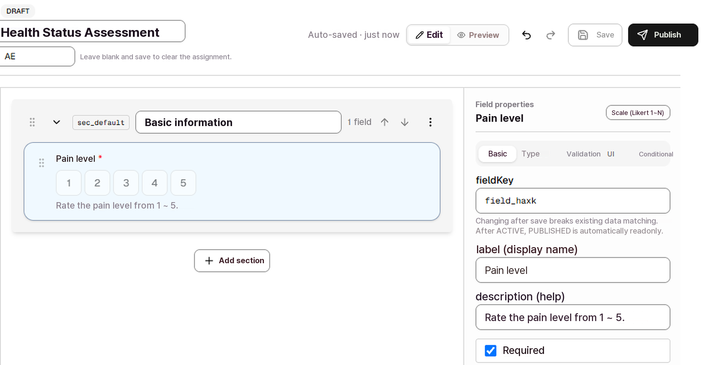
Required — When selected, this field becomes required.
A red asterisk (*) appears to the right of the display name on the canvas, telling users that the field is required.
Precautions
Must check Data corruption · Form cannot be completed
- • Scale has no “Not applicable” option. The buttons are only the numbers from min to max, so a subject with no symptoms has nothing to pick. If an item can have such cases, either ① set min to 0 to include “0 = none” in the options, ② use conditional display to ask only those it applies to Ch. 5, or ③ allow the not-measured declaration 2.4. If you make the field required without deciding on one of these three, the form cannot be completed.
- • Fields hidden by conditional display are exempt from required validation. Ch. 5 Hiding in the UI tab, by contrast, does not exclude them, so do not confuse the two. 4.3
Easily misunderstood behavior
- • If the not-measured declaration is allowed and the user declares it, the field is excluded from the required-item count. 2.4
Note
- • The required setting is used for the form completion check. If no button is picked, the value is treated as empty.
2.3SDV target (CRA source data check)
Overview
SDV (Source Data Verification) is the procedure in which the clinical research associate (CRA) checks entered values against the site's source data. Here you decide whether this field is a target of that procedure. This setting is the same for all field types, so the screen is also the same regardless of type.
Screen guide

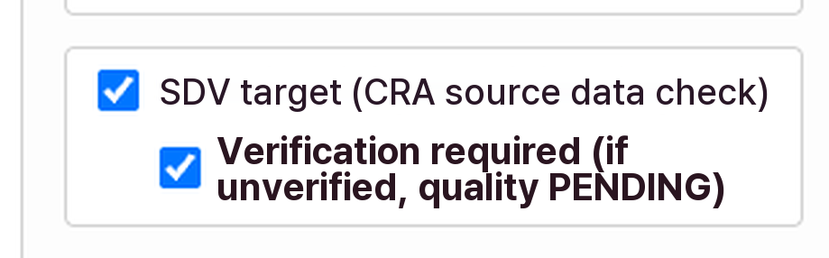
SDV target (CRA source data check) — When selected, this field is included in the CRA's check list.
When it becomes selected, the sub-item is enabled.
Verification required (if unverified, quality PENDING) — Can be set only after ① is selected. When selected, the quality status of the data stays at PENDING until the CRA finishes the check.
Before ① is selected, ② is grayed out and disabled. As the on-screen notice says, “Set the field as a verification target first to choose whether verification is required.”
Precautions
Must check Data corruption · Form cannot be completed
- • Changing a value clears its verification. If you change the selection of a field that is already VERIFIED, the quality status returns to PENDING and the CRA must check it again.
Easily misunderstood behavior
- • SDV cannot be performed by the person who entered the data. The system enforces cross-verification (Cross-User SoD), so the person entering and the person verifying must be different.
- • A scale answered by the subject (patient-reported outcome) may have no source data to check against. It is realistic to make it an SDV target only when the original questionnaire is kept.
Note
- • The quality status progresses in the order PENDING → VERIFIED → CLEAN. If even one field marked verification required is unverified, the data cannot become CLEAN.
2.4Allow not-measured declaration
Overview
This feature records, as a value, the case where an assessment could not be performed. If no button is picked, “not answered yet” cannot be distinguished from “could not be assessed”. This declaration distinguishes the two.
Screen guide

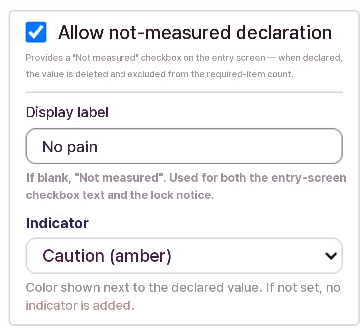
Allow not-measured declaration — When selected, a “Not measured” checkbox is created on the entry screen and the two items below appear.
Display label — If left blank, the default “Not measured” is used.
If you change the text, it is applied to both the entry-screen checkbox and the lock notice.
Indicator — The default is None.
If you change it to Caution (amber), a mark in that color appears next to the declared value.
Precautions
Must check Data corruption · Form cannot be completed
- • ⛔ Do not record “no symptoms” as not measured. The display label
No painin the capture shows exactly this trap — having no pain is an assessment result, not a state in which the assessment could not be done. Declaring not measured deletes the value and also removes it from the required-item count, so the clinical information “No pain” is lost. If you need to record no symptoms, set min to 0 to include it in the options. 3.2 - • Declaring deletes the value. As the on-screen notice says — “When declared, the value is deleted and excluded from the required-item count.”
Easily misunderstood behavior
- • Use not measured for “cases where the assessment itself was impossible”, such as when pain could not be asked about because of reduced consciousness, or when the visit itself did not take place. Write the display label so that this meaning is clear (e.g.
Not assessable).
Note
- • If no indicator is set, no color mark is applied. If emphasis is needed, select Caution (amber) or another option.
Type settings tab — building the options
- 3.1Type settings tab layout
- 3.2Building the options (min · max · step · end labels)
- 3.3Default value (defaultValue)
3.1Overall layout
Overview
This tab builds the options. Unlike other types, it has no length · regular expression · unit; you only set where the buttons start and end, and at what interval they are created, and the descriptions attached to both ends. This type actually uses three items.
Screen guide
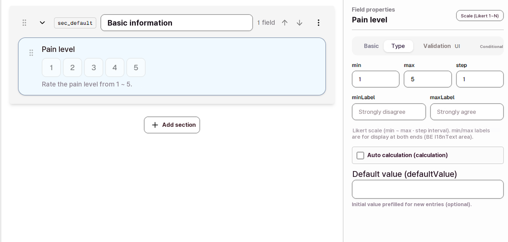
min · max · step — The start · end · interval of the options. 1 · 5 · 1 are filled in from the start; if left as is, you get five options, 1~5. 3.2
minLabel · maxLabel — Description text attached only to the buttons at both ends. 3.2
On-screen notice — “Likert scale (min ~ max · step interval). min/max labels are for display at both ends”
Auto calculation (calculation) — The item is shown, but it is not used for Scale. It is a feature that derives a number from other field values, so use it with the Number type.
Default value (defaultValue) — The value to preselect for new entries. 3.3
Precautions
Easily misunderstood behavior
- • min · max · step cannot be left empty. These three values are the options themselves, so if you clear them, no buttons can be created. This differs from other types, where most Type settings items are “optional”.
- • The faint
Strongly disagree·Strongly agreeare input examples, not set values. If left blank, no text is shown at either end. - • This tab has no setting that blocks input outside the value range. None is needed — users can pick only from the buttons that were created, so out-of-range values never occur in the first place.
Note
- • The layout of this tab is fixed by the type selected when the field was created. If the type differs, the items in this tab also differ.
3.2Building the options (min · max · step · end labels)
Overview
Sets how many options, with which numbers, and what the two ends mean. Buttons are created automatically from min to max at step intervals — the capture goes from 1 to 7 in steps of 1, giving 7 buttons.
Screen guide
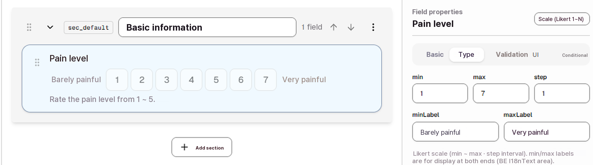
min — The starting number of the options. The default is 1.
max — The ending number of the options. In the capture it was changed to 7, making a 7-point scale.
step — The interval between numbers. It must be 1 or more; usually 1 is used as is.
Result of ①~③ — the buttons 1 2 3 4 5 6 7 are created on the canvas. The count is determined by (max − min) ÷ step + 1.
minLabel · maxLabel — Descriptions to attach to the buttons at both ends. The capture uses Barely painful · Very painful.
They are shown at the left and right ends of the button row respectively. No description is attached to the numbers in between.
Precautions
Must check Data corruption · Form cannot be completed
- • ⛔ Do not change the scale range after publishing. Data collected on 1~5 and data collected on 1~7 mean different things even for the same
3. If you change the range, data from before and after can no longer be analyzed as one scale. Set the range after it is finalized in the protocol. - • ⛔ If you need to express “no symptoms”, set min to 0. If min is 1, the lowest option becomes “slight”, and a subject with no symptoms has no option to pick. 2.2 · 2.4
- • The system does not prevent you from setting step larger than the range. For example, with min 1 · max 5 · step 10, only one button is created and the scale loses its meaning. Always check the number of buttons on the canvas before saving.
Easily misunderstood behavior
- • If min is greater than max, saving is rejected. Check both values together.
- • The meaning of the numbers in between is not described. Only the end labels are shown, so if a definition for each point is needed, write it in helpText. 4.4
Note
- • More points give finer responses but also increase variation between recorders. Use only as many as are needed for clinical distinction.
Common setups
| Setting | Options created | Use |
|---|---|---|
| min 1 · max 5 · step 1 | 1 2 3 4 5 | 5-point Likert (default) |
| min 1 · max 7 · step 1 | 1 2 3 4 5 6 7 | 7-point Likert (capture) |
| min 0 · max 10 · step 1 | 0 1 2 … 10 | NRS pain scale (0 = none) |
| min 0 · max 4 · step 1 | 0 1 2 3 4 | Severity grade (0 = none) |
3.3Default value (defaultValue)
Overview
The value to preselect when a new entry starts. Enter one number from the options.
Screen guide
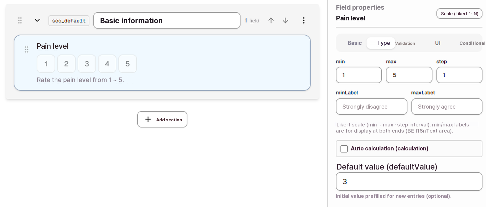
3 — no selection mark appears on the canvas buttonsDefault value (defaultValue) — Enter the number to be preselected for new entries. (Optional)
Precautions
Must check Data corruption · Form cannot be completed
- • ⛔ As a rule, do not set a default value for Scale. A scale asks for the subjective judgment of the subject or assessor, so if a middle value is preselected, responses are biased toward it. It also becomes impossible to tell whether an assessment was actually made.
- • Do not use a number outside the options as the default value. For example, entering
7for a 1~5 scale makes a value that cannot be picked the initial value.
Easily misunderstood behavior
- • The canvas preview does not show the default value. Even if you set
3as in the capture, button 3 does not appear selected — not because the setting was not applied, but because the preview does not draw the selected state. Check the actual effect on the entry screen. (This differs from other types, where the value is filled in.) - • The default value applies only to newly created entries. Data already saved is not changed.
UI tab — screen layout and guidance text
- 4.1UI tab layout
- 4.2Layout width
- 4.3Read-only · hidden
- 4.4helpText (help)
4.1Overall layout
Overview
This tab sets how the field is laid out and explained on screen, not the value itself. Settings in this tab do not change the stored data itself. However, Hidden only hides the field on screen and does not exclude it from the required-item count, so check 4.3 before using it.
Screen guide
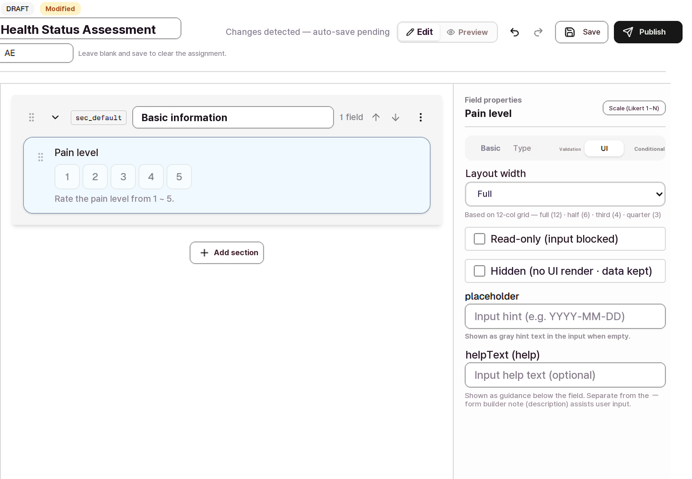
Layout width — The width this field takes up in a row. The meaning of the options is given in the notice right below: “Based on 12-col grid — full (12) · half (6) · third (4) · quarter (3)”. 4.2
Read-only (input blocked) — Shows the field but prevents selection. 4.3
Hidden (no UI render · data kept) — Hides the field from the screen. 4.3
placeholder — The item is shown, but it does not apply to Scale. It is hint text shown inside the input box when there is no value, and Scale has no input box for typing text. If guidance is needed, use helpText.
helpText (help) — Guidance text shown below the field. It is the most important item for Scale. 4.4
Precautions
Must check Data corruption · Form cannot be completed
- • Scale is a type that relies on guidance text. Only number buttons appear on screen, so unless text tells users the direction (which end is more severe) and the meaning of each point, recording becomes inconsistent. Since placeholder cannot be used, be sure to fill in helpText. 4.4
Note
- • By default, Layout width = Full, and Read-only · Hidden are cleared.
- • There is no setting for button size or color. Buttons are arranged automatically to fit the screen width.
4.2Layout width
Overview
Select the width this field takes up on the 12-column grid, which divides a row into 12 columns. Scale is a type whose buttons are lined up horizontally, so take care when reducing the width.
Screen guide
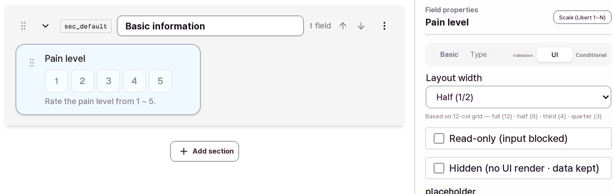
Layout width — Specify the width from the selection list. The example is Half (1/2).
The canvas field shrinks to half width. The 5 buttons still fit in one row.
Precautions
Must check Data corruption · Form cannot be completed
- • ⛔ Do not reduce the width of a scale with many points. The buttons and end labels cannot fit in one row, so they wrap or the text is cut off. For 7 points or more, use Full.
Easily misunderstood behavior
- • When you reduce the width, the next field is placed on the same row. If the total in a row exceeds 12, the field moves to the next row.
- • After changing the setting, check on the canvas that the buttons fit in one row. The preview shows the actual layout as is.
Note
- • On devices with a narrow screen, fields may be stacked one per row regardless of this setting.
Width options
| Option | Columns used | Fields per row | For Scale |
|---|---|---|---|
| Full | 12 | 1 | Safe even with many points — recommended |
| Half (1/2) | 6 | 2 | Up to about 5 points |
| Third (1/3) | 4 | 3 | Buttons may wrap |
| Quarter (1/4) | 3 | 4 | Even the end labels overlap and are hard to read |
4.3Read-only · hidden
Overview
Makes the field impossible to select or not displayed. In both cases the stored value is preserved as is.
Screen guide
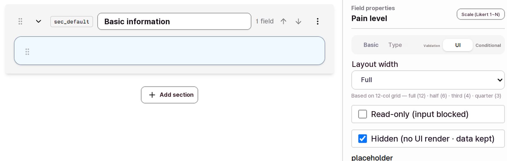
Read-only (input blocked) — The picked value is shown, but users cannot change it. (Cleared in this capture)
Hidden (no UI render · data kept) — The field is not shown on the entry screen. Values already saved are not deleted.
The field disappears from the canvas, and the section looks empty.
Precautions
Must check Data corruption · Form cannot be completed
- • ⛔ Do not hide required items. Hiding in the UI tab only hides the field on screen and does not exclude it from the required-item count — an item users cannot pick stays in the count, and the form can no longer be completed.
- • Hiding does not delete data. The field only disappears from the screen; to delete the value, you must delete the field.
Easily misunderstood behavior
- • This differs from hiding in the Conditional tab. Fields hidden because the condition is not met are excluded from the required-item count Ch. 5. Both use the word “hidden”, but they are handled in exactly opposite ways in validation, so tell them apart.
- • Read-only and Hidden are different. Read-only means “shown but not changeable”; Hidden means “not shown”. If you need to show a grade that has already been answered, use Read-only.
Note
- • Even when hidden, the field remains in the Structure panel — you can select it again and revert the setting.
4.4helpText (help)
Overview
The guidance text attached below the field. For Scale, where only number buttons are shown, this text determines how consistent the records are. It does not disappear when input starts, so it is well suited for writing down the assessment criteria.
Screen guide
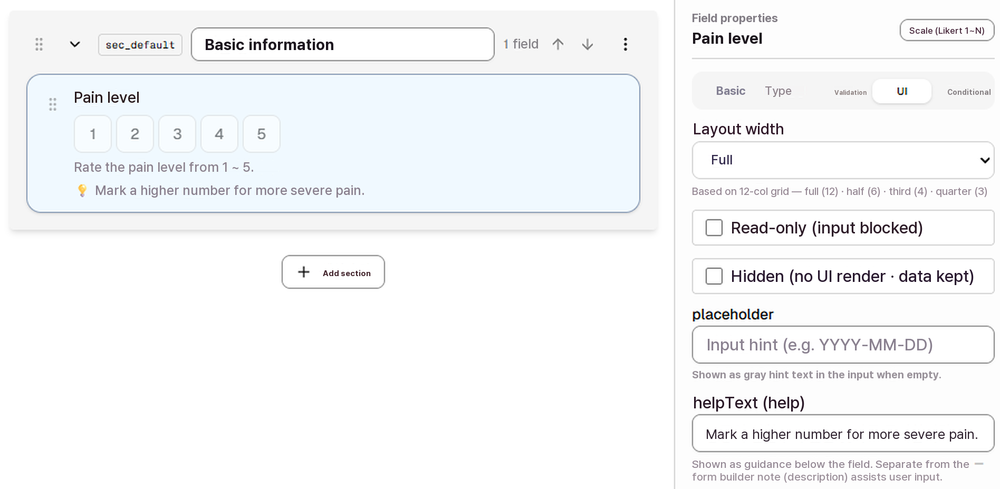
helpText (help) — Enter the guidance text to show below the field. The capture uses Mark a higher number for more severe pain., which tells users the direction of the scale.
It is shown below the field with a light bulb icon (💡). It does not disappear even after the user picks a value.
placeholder is blank — it is an item that does not apply to Scale. 4.1
Precautions
Must check Data corruption · Form cannot be completed
- • Always state the direction. Even a single sentence such as “higher number = more severe” prevents recorders from reading the scale backwards. This is the most common error with scales.
- • Write the meaning of the middle points here. There are only two end labels 3.2, so if definitions for point 3 · point 4 are needed, write them in helpText as well.
Easily misunderstood behavior
- • description and helpText are different items. As the on-screen notice says, helpText is “Separate from the form builder note (description) — assists user input”. If both are entered, both lines are shown.
Roles of the 4 guidance texts
| Item | Where shown | For Scale | Where set |
|---|---|---|---|
| helpText | Below the field (💡) | Write the assessment criteria · direction | UI tab |
| description | Below the display name | Write what the item asks | Basic tab 2.1 |
| minLabel · maxLabel | Both ends of the button row | Only the meaning of the end points, briefly | Type settings tab 3.2 |
| placeholder | — | Not applied | UI tab |
Conditional tab — showing a field based on another value
- 5.1Enabling conditional display
- 5.2Setting the condition
5.1Enabling conditional display
Overview
This feature shows or hides this field depending on the value of another field. Use it for branching, such as asking about pain level only when “Any pain = Yes” — it is the feature that suits Scale best, as it avoids showing buttons they cannot pick to subjects to whom the item does not apply.
Screen guide
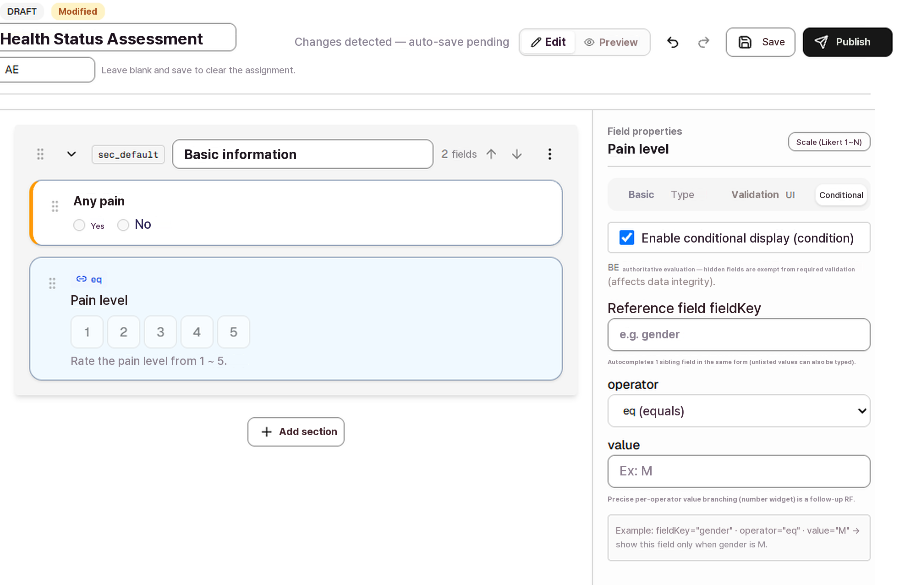
Enable conditional display (condition) — When selected, the condition settings below appear.
A 🔗 eq badge appears above the field on the canvas to show that a condition is applied.
⚠ On-screen notice — “Hidden fields are exempt from required validation (affects data integrity).” The condition is evaluated by the system.
Reference field fieldKey — Another field in the same form on which the condition is based. Sibling fields in the same form are autocompleted, and you can also type a value not in the list.
operator — The comparison method. The default is eq (equals).
value — The value to compare with.
Example at the bottom — fieldKey="gender" · operator="eq" · value="M" → show this field only when gender is M.
Precautions
Must check Data corruption · Form cannot be completed
- • Setting a condition can exempt a field from required validation. While a field is hidden because the condition is not met, the form is completed with that field empty even if it is required. This is intended behavior, not a defect.
- • If the condition becomes false while a value has already been picked, that value disappears from the screen. Take care when changing the field the branch is based on later.
Easily misunderstood behavior
- • This is the cleanest way to solve the “Not applicable” problem. If only subjects with symptoms are asked about severity, you do not have to force a “none” option into the scale, and making the field required also becomes safe. 2.2
Note
- • If you enable the condition and leave the reference field blank, the condition is never met. Be sure to fill in all of ②~④. 5.2
5.2Setting the condition
Overview
This is the state after the condition enabled in 5.1 has been fully entered. With this setting, this Scale field is shown on the entry screen only when the value of the “Any pain” field is 1 (Yes).
Screen guide
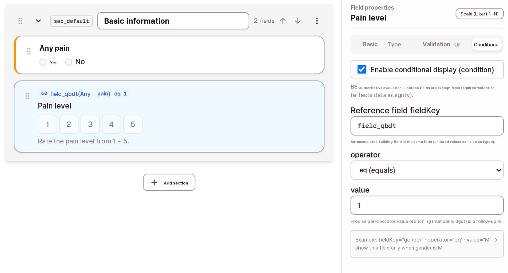
Any pain is 1Reference field fieldKey = field_qbdt — Points to the “Any pain” field in the same form.
operator = eq (equals)
value = 1 — Enter the value stored for that option, not the “Yes” shown on screen.
Result of entering all of ①~③ — the canvas badge becomes specific: 🔗 field_qbdt(Any pain) eq 1. You can see the condition at a glance.
Example at the bottom — fieldKey="gender" · operator="eq" · value="M" → show this field only when gender is M.
Precautions
Must check Data corruption · Form cannot be completed
- • ⛔ Enter the stored value in value, not the on-screen text. In the capture the reference field appears as Yes / No, but the actual stored value is
1. If you enter “Yes”, the condition is never met and this field is never shown. First check the stored values of the options of the field you reference. - • Changing or deleting the fieldKey of the reference field breaks the condition. Conditions are linked by fieldKey, not by display name. (This is the same reason as the fieldKey caution in 2.1.)
Easily misunderstood behavior
- • You can also reference a Scale field. In that case, enter the picked number as is in value (e.g. show an additional question only when the pain level is 4 or higher — but eq is met only on an exact match, so if you need “at least · at most”, check the operator).
Note
- • Using conditions makes forms shorter and reduces unnecessary input. However, conflicting conditions create fields that are never shown, so always check in Preview after setting them.
Appendix
- 6.1Settings at a glance
6.1Scale field settings at a glance
Settings by tab
| Tab | Item | What it sets | Section |
|---|---|---|---|
| Basic | fieldKey | The actual key under which the value is stored (do not change after saving) | 2.1 |
| label (display name) | Item name shown on screen | 2.1 | |
| description (help) | Supporting description below the display name | 2.1 | |
| Required | Whether it must be selected (plan for “Not applicable” first) | 2.2 | |
| SDV target | Whether it is a CRA source data check target · whether verification is required | 2.3 | |
| AE semantic role | What this field means in the AE form | ※ | |
| Allow not-measured declaration | Whether “could not be assessed” can be recorded as a value · display label · indicator | 2.4 | |
| Type settings | min · max · step | Start · end · interval of the options (buttons are created automatically) | 3.2 |
| minLabel · maxLabel | Description text attached only to the buttons at both ends | 3.2 | |
| Default value (defaultValue) | Number to preselect (not recommended for Scale) | 3.3 | |
| Auto calculation | Not used in this type | 3.1 | |
| UI | Layout width | Width on the 12-col grid — Full if there are many points | 4.2 |
| Read-only | Shown but not changeable | 4.3 | |
| Hidden | Not shown on screen (stored value kept · still counted as required) | 4.3 | |
| helpText (help) | Assessment criteria · direction — the most important item for Scale | 4.4 | |
| Conditional | Condition active | Whether conditional display is used (exempt from required validation) | 5.1 |
| Reference field fieldKey | Field in the same form on which the condition is based | 5.2 | |
| operator · value | Comparison method and value to compare (enter the stored value) | 5.2 |
Must remember
Must check Data corruption · Form cannot be completed
- • Do not change the scale range after publishing.
3on 1~5 and3on 1~7 mean different things — data from before and after can no longer be analyzed as one scale. 3.2 - • Do not record “no symptoms” as not measured. It is an assessment result, not “could not be assessed”. To record it, set min to 0. 2.4 · 3.2
- • Do not make the field required without a plan for “Not applicable”. First decide on one of min 0 · conditional display · not-measured declaration. 2.2
- • Do not set a default value for Scale. It is a subjective assessment, so responses are pulled toward that value. 3.3
- • State the direction in helpText. The single sentence “higher number = more severe” prevents reading the scale backwards. 4.4
Easily misunderstood behavior
- • The stored value is a number only. End labels are on-screen text and are not stored in the data. 1.1
- • Even if a default value is set, no selection mark appears on the canvas. This does not mean the setting failed. 3.3
Note
- • If you set step larger than the range, only one button is created, and the system does not prevent it. Check the count on the canvas. 3.2
Not covered in this document
※ AE semantic role — It is on the Basic tab, but there is no capture of the setup process, so it has no separate section. Set it only in projects that use the adverse event (AE) form; for details, refer to the AE documentation.
Validation tab — It exists among the property tabs, but it is not used for Scale. Validation checks whether a value entered by the user meets a condition, but with Scale users can pick only from the buttons that were created, so out-of-range values never occur in the first place. To change the options themselves, adjust min · max · step in the Type settings tab. 3.2
Auto calculation (calculation) — The item is shown on the Type settings tab but is not used in this type. It calculates numbers from other field values, so use it with the Number type. 3.1
placeholder — The item is shown in the UI tab, but it is not applied. This type has no box for typing text. Provide guidance with helpText. 4.1 · 4.4